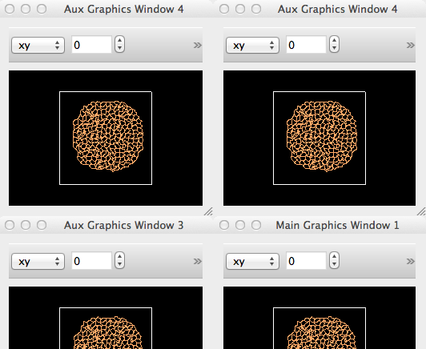
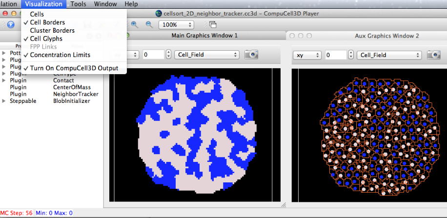
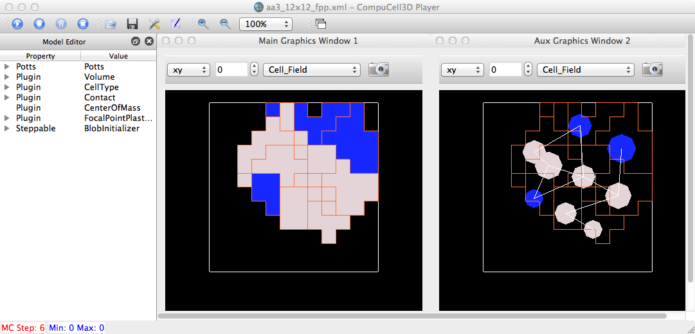

Julio recently pointed out a bug that's probably always existed in the Player but has never risen to the top of the priority queue. For example, you can have multiple graphics windows displayed, however there is only the one (global) Visualization menu containing the options for what to draw: cells, cell borders, cluster borders, glyphs, and FPP links. It would be desirable to have these be per-window parameters. One way we might do that (with moderate effort) would be to have the Vis menu items be applied to the currently selected window. We could create a Python dict for this mapping of vis params to windows, just as we have a dict now for the graphics windows themselves.
The loop to render over all graphics windows is in SimpleTabView.py: drawFieldRegular (and its CML cousin):
for windowName in self.graphicsWindowDict.keys():
graphicsFrame = self.windowDict[windowName]
# print "graphicsFrame=",graphicsFrame
#rwh: error if we try to invoke switchdim earlier
(currentPlane, currentPlanePos) = graphicsFrame.getPlane()
graphicsFrame.drawFieldLocal(self.basicSimulationData)
Another bug involves the numbering of windows. E.g., if we create 4 windows, 1,2,3,4, then delete 2, then create a new window, we end up with two 4s (since the code simply subtracts one from the total # when a window is deleted and then adds one to the total when a new window is created).

SimpleViewManager: self.lastActiveWindow= <Graphics.GraphicsFrameWidget.GraphicsFrameWidget object at 0x127f2bc20>
SimpleViewManager: winId, windowTitle= 140291111947440 Main Graphics Window 1
SimpleViewManager: dir(self.lastActiveWindow)= ['Box', 'DrawChildren', 'DrawWindowBackground', 'HLine', 'IgnoreMask', 'NoFrame', 'PaintDeviceMetric', 'Panel', 'PdmDepth', 'PdmDpiX', 'PdmDpiY', 'PdmHeight', 'PdmHeightMM', 'PdmNumColors', 'PdmPhysicalDpiX', 'PdmPhysicalDpiY', 'PdmWidth', 'PdmWidthMM', 'Plain', 'Raised', 'Render', 'RenderFlag', 'RenderFlags', 'Shadow', 'Shadow_Mask', 'Shape', 'Shape_Mask', 'StyleMask', 'StyledPanel', 'Sunken', 'VLine', 'WinPanel', '_GraphicsFrameWidget__initCrossSectionActions', '__class__', '__delattr__', '__dict__', '__doc__', '__format__', '__getattr__', '__getattribute__', '__hash__', '__init__', '__module__', '__new__', '__reduce__', '__reduce_ex__', '__repr__', '__setattr__', '__sizeof__', '__str__', '__subclasshook__', '__weakref__', '_fieldTypeChanged', '_projComboBoxChanged', '_projSpinBoxChanged', '_switchDim', '_takeShot', '_xyChecked', '_xzChecked', '_yzChecked', 'acceptDrops', 'accessibleDescription', 'accessibleName', 'actionEvent', 'actions', 'activateWindow', 'addAction', 'addActions', 'adjustSize', 'autoFillBackground', 'backgroundRole', 'baseSize', 'blockSignals', 'camera2D', 'camera3D', 'changeEvent', 'childAt', 'childEvent', 'children', 'childrenRect', 'childrenRegion', 'clearFocus', 'clearMask', 'close', 'closeEvent', 'colorCount', 'connect', 'connectNotify', 'contentsMargins', 'contentsRect', 'contextMenuEvent', 'contextMenuPolicy', 'create', 'cstb', 'currentDrawingObject', 'currentProjection', 'cursor', 'customContextMenuRequested', 'customEvent', 'deleteLater', 'depth', 'destroy', 'destroyed', 'devType', 'disconnect', 'disconnectNotify', 'dragEnterEvent', 'dragLeaveEvent', 'dragMoveEvent', 'draw2D', 'draw3D', 'draw3DFlag', 'drawFrame', 'drawModel2D', 'drawModel3D', 'dropEvent', 'dumpObjectInfo', 'dumpObjectTree', 'dynamicPropertyNames', 'effectiveWinId', 'emit', 'enabledChange', 'ensurePolished', 'enterEvent', 'event', 'eventFilter', 'fieldComboBox', 'fieldComboBoxAct', 'fieldTypes', 'find', 'findChild', 'findChildren', 'focusInEvent', 'focusNextChild', 'focusNextPrevChild', 'focusOutEvent', 'focusPolicy', 'focusPreviousChild', 'focusProxy', 'focusWidget', 'font', 'fontChange', 'fontInfo', 'fontMetrics', 'foregroundRole', 'frameGeometry', 'frameRect', 'frameShadow', 'frameShape', 'frameSize', 'frameStyle', 'frameWidth', 'geometry', 'getActiveCamera', 'getCamera', 'getCamera2D', 'getCamera3D', 'getContentsMargins', 'getPlane', 'grabGesture', 'grabKeyboard', 'grabMouse', 'grabShortcut', 'graphicsEffect', 'graphicsProxyWidget', 'handle', 'hasFocus', 'hasMouseTracking', 'height', 'heightForWidth', 'heightMM', 'hide', 'hideEvent', 'inherits', 'initCrossSectionToolbar', 'inputContext', 'inputMethodEvent', 'inputMethodHints', 'inputMethodQuery', 'insertAction', 'insertActions', 'installEventFilter', 'isActiveWindow', 'isAncestorOf', 'isEnabled', 'isEnabledTo', 'isEnabledToTLW', 'isFullScreen', 'isHidden', 'isLeftToRight', 'isMaximized', 'isMinimized', 'isModal', 'isRightToLeft', 'isTopLevel', 'isVisible', 'isVisibleTo', 'isWidgetType', 'isWindow', 'isWindowModified', 'keyPressEvent', 'keyReleaseEvent', 'keyboardGrabber', 'killTimer', 'languageChange', 'layout', 'layoutDirection', 'leaveEvent', 'lineEdit', 'lineWidth', 'locale', 'logicalDpiX', 'logicalDpiY', 'lower', 'mapFrom', 'mapFromGlobal', 'mapFromParent', 'mapTo', 'mapToGlobal', 'mapToParent', 'mask', 'maximumHeight', 'maximumSize', 'maximumWidth', 'metaObject', 'metric', 'midLineWidth', 'minimumHeight', 'minimumSize', 'minimumSizeHint', 'minimumWidth', 'mouseDoubleClickEvent', 'mouseGrabber', 'mouseMoveEvent', 'mousePressEvent', 'mouseReleaseEvent', 'move', 'moveEvent', 'moveToThread', 'nativeParentWidget', 'nextInFocusChain', 'normalGeometry', 'numColors', 'objectName', 'overrideWindowFlags', 'overrideWindowState', 'paintEngine', 'paintEvent', 'paintingActive', 'palette', 'paletteChange', 'parent', 'parentWidget', 'physicalDpiX', 'physicalDpiY', 'plane', 'planePos', 'populateLookupTable', 'pos', 'previousInFocusChain', 'projComboBox', 'projComboBoxAct', 'projSBAct', 'projSpinBox', 'property', 'pyqtConfigure', 'qvtkWidget', 'raise_', 'receivers', 'rect', 'releaseKeyboard', 'releaseMouse', 'releaseShortcut', 'removeAction', 'removeEventFilter', 'ren', 'renWin', 'render', 'repaint', 'resetInputContext', 'resize', 'resizeEvent', 'restoreGeometry', 'saveGeometry', 'screenshotAct', 'scroll', 'sender', 'setAcceptDrops', 'setAccessibleDescription', 'setAccessibleName', 'setActiveCamera', 'setAttribute', 'setAutoFillBackground', 'setBackgroundRole', 'setBaseSize', 'setConnects', 'setContentsMargins', 'setContextMenuPolicy', 'setCursor', 'setDisabled', 'setDrawingStyle', 'setEnabled', 'setFieldTypesComboBox', 'setFixedHeight', 'setFixedSize', 'setFixedWidth', 'setFocus', 'setFocusPolicy', 'setFocusProxy', 'setFont', 'setForegroundRole', 'setFrameRect', 'setFrameShadow', 'setFrameShape', 'setFrameStyle', 'setGeometry', 'setGraphicsEffect', 'setHidden', 'setInitialCrossSection', 'setInputContext', 'setInputMethodHints', 'setLayout', 'setLayoutDirection', 'setLineWidth', 'setLocale', 'setMask', 'setMaximumHeight', 'setMaximumSize', 'setMaximumWidth', 'setMidLineWidth', 'setMinimumHeight', 'setMinimumSize', 'setMinimumWidth', 'setMouseTracking', 'setObjectName', 'setPalette', 'setParent', 'setPlane', 'setProperty', 'setShortcutAutoRepeat', 'setShortcutEnabled', 'setShown', 'setSizeIncrement', 'setSizePolicy', 'setStatusTip', 'setStyle', 'setStyleSheet', 'setTabOrder', 'setToolTip', 'setUpdatesEnabled', 'setVisible', 'setWhatsThis', 'setWindowFilePath', 'setWindowFlags', 'setWindowIcon', 'setWindowIconText', 'setWindowModality', 'setWindowModified', 'setWindowOpacity', 'setWindowRole', 'setWindowState', 'setWindowTitle', 'setZoomItems', 'show', 'showEvent', 'showFullScreen', 'showMaximized', 'showMinimized', 'showNormal', 'signalsBlocked', 'size', 'sizeHint', 'sizeIncrement', 'sizePolicy', 'stackUnder', 'startTimer', 'staticMetaObject', 'statusTip', 'style', 'styleSheet', 'tabletEvent', 'testAttribute', 'thread', 'timerEvent', 'toolTip', 'topLevelWidget', 'tr', 'trUtf8', 'underMouse', 'ungrabGesture', 'unsetCursor', 'unsetLayoutDirection', 'unsetLocale', 'update', 'updateGeometry', 'updateMicroFocus', 'updatesEnabled', 'usedDraw3DFlag', 'visibleRegion', 'whatsThis', 'wheelEvent', 'width', 'widthMM', 'winId', 'window', 'windowActivationChange', 'windowFilePath', 'windowFlags', 'windowIcon', 'windowIconText', 'windowModality', 'windowOpacity', 'windowRole', 'windowState', 'windowTitle', 'windowType', 'x', 'xyMaxPlane', 'xyPlane', 'xzMaxPlane', 'xzPlane', 'y', 'yzMaxPlane', 'yzPlane']
SimpleTabView:
def updateActiveWindowVisFlags(self):
self.graphicsWindowVisDict[self.lastActiveWindow.winId()] = (self.cellsAct.isChecked(),self.borderAct.isChecked(), \
self.clusterBorderAct.isChecked(),self.cellGlyphsAct.isChecked(),self.FPPLinksAct.isChecked() )
print
print MODULENAME, 'updateActiveWindowVisFlags(): self.lastActiveWindow.winId()=',self.lastActiveWindow.winId()
print MODULENAME, 'updateActiveWindowVisFlags(): self.graphicsWindowVisDict[self.lastActiveWindow.winId()]=',self.graphicsWindowVisDict[self.lastActiveWindow.winId()]
A much improved version allows user to select a window in the "Window" menu and then have the "Visualization" options be applied only to that selected window.


Finally, some progress on being able to select different Vis options for different windows: Some remaining issues: If we create > 1 window and delete the last one (highest #): - it disappears from 'Window' menu, but another (current) window name is not selected - the Vis menu items remain checked for the deleted window - Selecting a window in the 'Window' menu does NOT "select/highlight" its graphics win border. - Cannot simply click on a graphics window and have it be the "active" window, i.e. the one selected in the Windows menu. - The multi-window, window-dependent vis options are not persistent, i.e. they are not saved in the Prefs file for next time. - Cell glyph params (via Prefs:Cell Type panel) are global, not per-window.